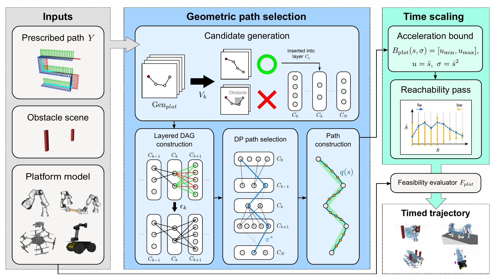

Unified Prescribed-Path Planning and Feasibility Checking Across Redundant Manipulators
Abstract
When automation prescribes the tool path, a redundant robot must choose an inverse-kinematics branch per waypoint and a speed within actuation limits. Planners are rebuilt per platform, and geometrically valid paths may be infeasible. We show that for robots as different as serial, cooperative dual-arm, aerial, and mobile manipulators, fixed-path timing feasibility reduces to one computable condition: membership in a closed interval of admissible path accelerations. A single unmodified Time-Optimal Path Parameterization solver serves them all, barring non-convex timing feasibility or an unresolved discrete mode. GRAFT (Graph-based Redundancy Adaptation with Fixed-path Time Scaling) builds on this reduction as one offline layer that returns a timed trajectory passing the platform-model checks or rejects the path with a diagnostic before commissioning. Across 400 uncurated paths, no trajectory GRAFT returns fails a 0.1 ms replay, bounding the per-path false-accept rate at 3.0% per class and 0.75% pooled (one-sided 95% Clopper–Pearson), and no compared method at its reported setting recovers more on any class. A planned trajectory executes on dual-arm hardware. On a rail-arm workcell beyond the four, load-aware selection extends the feasible payload by a mean 17.4% across the seventeen of twenty paths GRAFT validates (95% CI 14.1–20.7%).
Method

The GRAFT planning pipeline. Two stages, geometric path selection and fixed-path time scaling, are separated by path fixation. A platform supplies its own model components without modifying either stage, and a platform-model check runs on the timed trajectory before it is returned.
At each waypoint, inverse-kinematics candidates are screened for kinematic validity and by a platform-model preview, and dynamic programming on a layered graph selects a configuration-continuous path. The selected states are carried to a fixed smooth path, which one unmodified TOPP-RA pass times. The decision is two-valued: GRAFT returns a timed trajectory that satisfies the platform model, or rejects the path with a diagnostic naming the stage that failed.
One Condition, Four Platforms
These four platforms constrain motion through unrelated mechanisms—joint torque, cooperative wrench balance, tilt-dependent thrust allocation, and nonholonomic rolling—yet the fixed-path timing constraints of each reduce to a closed interval of admissible path accelerations. One unmodified TOPP-RA solver therefore times all of them; only the platform model plugs in.
Serial Redundant Manipulator
Cooperative Dual-Arm Manipulator
Omnidirectional Aerial Manipulator
Nonholonomic Mobile Manipulator
Representative GRAFT-planned trajectories, one per platform class, on an obstacle-avoidance scenario.
Experiments
Every trajectory that GRAFT or a compared method returns is re-checked by a replay, a time-domain simulation of the platform model at a 0.1 ms step. A returned trajectory that passes is validated; one that fails is a false accept. Recall is measured against the witnessed-feasible paths, those that at least one compared method validates.
Uncurated Random-Path Screening
Per platform, 100 prescribed paths connect random start and goal poses by obstacle-avoiding curves; no path is curated for feasibility. None of GRAFT-Full's 203 returned trajectories fails the replay, which bounds the false-accept rate at 3.0% per path on each class and 0.75% pooled (one-sided 95% Clopper–Pearson). GRAFT-Full recovers every witnessed-feasible path on SRM, CDM and OAM and 90 of 92 on NMM, and no compared method at its reported setting validates more on any class.
| SRM | CDM | OAM | NMM | |
|---|---|---|---|---|
| Witnessed-feasible paths | 49 | 12 | 52 | 92 |
| Validated by GRAFT-Full | 49 | 12 | 52 | 90 |
| GRAFT-Full trajectories failing the replay | 0 | 0 | 0 | 0 |
| Best compared method | 46 Ferrentino-DPa | 5 ClosedLoop-DLS | 22 SequentialAllocation-DLS | 52 Bayle-RVK |
aIts configurations, timed by GRAFT's stage.
SRM
CDM
OAM
NMM
Representative GRAFT-Full trajectories from the uncurated screening suite, one per class.
Preview-Recall Under Load
To isolate the platform-model preview, the path is held fixed and an external load is swept through low, mid and crushing bins, with 50 trials per bin. GRAFT-P differs from GRAFT-Full only in omitting the preview during selection. GRAFT-Full holds recall at 1.0 in every bin, while GRAFT-P loses recall where the load engages the platform model. The loss is in recall, not soundness: no trajectory either method returns fails the replay.
| Platform | Method | Low | Mid | Crushing |
|---|---|---|---|---|
| SRM | GRAFT-Full | 1.00 | 1.00 | 1.00 (12) |
| GRAFT-P | 1.00 | 0.30 | 0.00 | |
| CDM | GRAFT-Full | 1.00 | 1.00 | 1.00 (12) |
| GRAFT-P | 1.00 | 0.20 | 0.00 | |
| OAM | GRAFT-Full | 1.00 | 1.00 | 1.00 (14) |
| GRAFT-P | 0.00 | 0.00 | 0.00 | |
| NMM | GRAFT-Full | 1.00 | 1.00 | 1.00 (11) |
| GRAFT-P | 1.00 | 1.00 | 0.00 |
SRM
CDM
OAM
NMM
One trial per platform with the same path and load (arrow) for both methods. Top: GRAFT-Full. Bottom: GRAFT-P. A panel turns green when the trajectory passes every check, and red where GRAFT-P's selection exceeds the static load limit.
Dual-Arm Hardware Execution
A GRAFT-planned cooperative trajectory ran on a physical dual-arm robot under its default position controller. Both arms lift a bucket, turn its barcode to a camera and place it on a conveyor, without controller abort, protective stop, or reported limit exceedance. The run is a qualitative demonstration; the quantitative claims rest on the simulation suites.
Industrial Deployment: Rail-Arm Box Extraction
Beyond the four classes, an industrial workcell supplied as a RoboDK program, a six-axis arm on a linear rail, pulls a box off a truck bed and sets it on a conveyor. On the extraction path GRAFT-Full keeps the path feasible up to a 105 kg box, against 85 kg for GRAFT-P and 84 kg for NullSpace-DLS. Over twenty independently drawn paths GRAFT-Full validates seventeen, and on all of them load-aware selection raises the feasible payload above the better load-agnostic method, by a mean 17.4% (95% interval 14.1–20.7%).
The extraction path with a 102 kg box. GRAFT-Full's selection holds the dominant joint within its torque bound, while both load-agnostic selections exceed it (red).
Scope
Acceptance establishes feasibility on the platform model: timing constraints hold over each cell of the delivered curve, and the other checks hold at their samples. It is not a continuous-time guarantee for the sampled checks, and the model omits contact mechanics, aerodynamic drag, drivetrain torque and joint flexibility. A rejection is relative to the sampled candidate bank, not a proof that the path admits no realization.